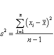

7.4. Comparisons based on data from more than two processes
7.4.2. Are the means equal?
7.4.2.1. |
1-Way ANOVA overview |
What are sums of squares and degrees of freedom?
The guiding principle behind ANOVA is the decomposition of
the sums of squares, or Total SS
Definition of "Treatment"
In an analysis of variance the variation in the response measurements is partitoned into components that correspond to different sources of variation.
The goal in this procedure is to split the total variation in the data into a portion due to random error and portions due to changes in the values of the independent variable(s).
The variance of n measurements is given by

The variance, after some algebra, can be rewritten as:

The SS in a 1-way ANOVA can be split up into two components, called the "sum of squares of treatments" and "sum of squares of error", abbreviated as SST and SSE.
Algebraically, this is expressed by

Don't be alarmed by the double subscripting. The total SS can be written single or double subscripted. The double subscript stems from the way the data are arranged in the data table. The table is usually a rectangular array with k columns and each column consists of ni rows (however, the lengths of the rows, or the ni, may be unequal).
We introduced the concepts of treatment. The definition is: A treatment is a specific combination of factor levels whose effect is to be compared with other treatments.